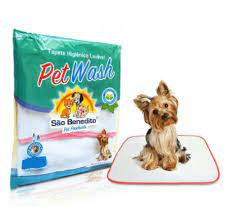

1. Ensine a usar o tapetinho higiênico
É importante educar o cachorro desde o primeiro contato, momento em que ele tende a estar mais aberto para o aprendizado, e uma das principais lições é o uso do tapete higiênico. Assim, as necessidades serão feitas no lugar certo na grande maioria das vezes.
Esses tapetes são bem práticos e úteis, principalmente para quem não quer levar o cachorro à rua para suas necessidades, mas é fundamental saber como ensiná-lo da maneira certa.

O tapete higiênico deve ser colocado longe do comedouro e do bebedouro do animal e, de preferência, ficar sempre no mesmo lugar, para que o processo de aprendizado não precise ser feito novamente.
Leve o animal até o tapete algumas vezes durante o dia e depois que ele comer, para incentivar o uso. Quando o cachorro fizer as necessidades no lugar errado, não brigue com ele e espere um pouco para limpar.
Sempre que ele usar o tapete corretamente, dê um petisco, faça carinho ou ofereça outra recompensa. Assim, ele aprenderá que fez a lição da maneira certa.
2. Preste atenção na ração
Boa parte da saúde do seu cão está relacionada à escolha da ração, já que essa será a principal fonte nutricional para ele, e por mais que haja centenas de opções, a escolha não é tão difícil quanto parece.
O primeiro ponto é analisar a idade do cachorro. Quando eles são jovens, as necessidades nutricionais são mais intensas graças ao ritmo acelerado de crescimento e desenvolvimento. Por isso, as rações para filhotes são mais energéticas do que as para idosos, que são menos calóricas.
Além disso, também é importante ponderar o porte do cachorro. Os maiores precisam de uma grande quantidade de ração, enquanto os menores se alimentam com porções reduzidas. Isso impacta até mesmo no tamanho dos grãos.
Saber como ler os rótulos também é fundamental. Na composição da ração (e também dos alimentos para humanos), o primeiro item é o que está presente em maior proporção. Por isso, o item que abre a lista sempre deve ser alguma proteína animal, como carne, peixe ou frango.
A fórmula deve trazer conservantes naturais e as vitaminas e minerais que os cães precisam para sua saúde, como ferro, zinco, cálcio, cobre e manganês.
Gorduras saudáveis, como as nomeadas de alguma proteína (gordura de vaca ou de frango) e grãos (arroz, cevada) também podem aparecer, já que possuem bom valor nutritivo.
Evite as rações econômicas e standard e opte pelas premium e super premium, cuja composição leva melhores ingredientes e oferece as vitaminas e minerais que os cães precisam. Além disso, evite as rações coloridas, que geralmente são feitas para agradar mais os tutores que os pets.
3. Leve o cachorro para passear
Caminhar com o cachorro é uma atividade básica e essencial para a saúde do animal, além de deixá-lo mais feliz e satisfeito. Prova disso é a frase mágica “vamos passear?”, que já faz muitos cães abanarem a cauda e latirem de alegria.
Primeiro, tenha certeza de que o cão está protegido contra pulgas e carrapatos e com suas vacinas em dia. Afinal de contas, não dá para saber com o que o animal se deparará quando estiver em seu passeio.
Bons acessórios para caminhada também são essenciais. Os melhores são as coleiras de peitoral, que trazem mais conforto, segurança e ergonomia ao animal e ao tutor.
E até mesmo, evitam problemas que os modelos tradicionais podem trazer a longo prazo, como glaucoma.
O ideal é que o cachorro passeie duas vezes por dia pelo período de 30 minutos. Mas, se não for possível, leve-o pelo menos uma vez por dia.
Assim, ele conseguirá gastar energia e ficará ainda mais contente. Só tome cuidado com a temperatura da calçada ou do chão: se estiver muito quente, espere até esfriar.
4. Evite pulgas e carrapatos
Picadas, coceiras, vermelhidão e até alergias. Esses são alguns dos possíveis males trazidos por estas pragas, o que realça a necessidade de usar antipulgas e carrapatos em seu cachorro.
Como diz o ditado, é melhor prevenir do que remediar. Por isso, cuide da casa e do ambiente em que o pet fica e mantenha-os sempre bem limpos e higienizados. Geralmente, as pulgas e carrapatos costumam ficar na caminha, nos cobertores e outros lugares em que o cão fica.
Para escolher o melhor antipulgas, o ideal é perguntar para o seu veterinário, pois o profissional dirá qual é o melhor produto de acordo com o perfil do cachorro, como coleiras, pipetas ou comprimidos.
Além disso, certifique-se de usar a dose certa para o tamanho do animal e de sempre escolher produtos de qualidade comprovada.
Em casos de infestação, trate também da casa e do ambiente em que o animal fica com produtos especiais, como os desenvolvidos para aplicação no chão. Sempre siga as orientações de aplicação e mantenha o cachorro longe daquele local pelo período de tempo indicado pelo fabricante.
Além disso, sempre que o cachorro tomar banho, é fundamental olhar com cuidado para verificar se ele não está com nenhuma pulga, carrapato, ovos ou larvas. Em caso de qualquer dúvida, procure o veterinário o mais rápido possível.